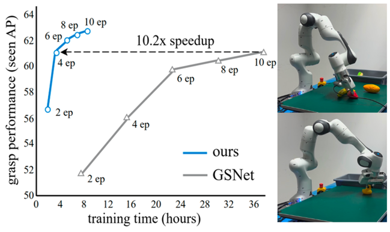

|
|
Jian-Jian Jiang (蒋艰坚)
M.S. student
School of Computer Science and Engineering
Sun Yat-sen University
jiangjj35@mail2.sysu.edu.cn
Github
|
Biography
I'm currently a first-year master student at Sun Yat-sen University, advised by Prof. Wei-Shi Zheng, where I cultivate the interest in research, and develop the scientific ability and taste of it.
Previously, I obtain my B.E. degree in Hunan University.
|
Research Interests
My current research interests focus on the efficient and reliable learning of grasping skills while ensuring their deployability in the real world.
At the same time, I am actively studying how to facilitate the robot to obtain generalizable, precise and complex manipulation skills.
|
Publications
Below are my publications. My first author works are highlighted.
(This page includes papers in arXiv, & means equal contribution, * refers to corresponding author.)
|
AI Robotics
|
|
|
Grasp as You Say: Language-guided Dexterous Grasp Generation
Yi-Lin Wei, Jian-Jian Jiang, Chengyi Xing, Xiantuo Tan, Xiao-Ming Wu, Hao Li, Mark Cutkosky, Wei-Shi Zheng*.
Neural Information Processing Systems (NeurIPS), 2024.
paper
(Dexterous Grasp) We propose a novel task "Dexterous Grasp as You Say" (DexGYS), with a benchmark and a framework, enabling robots to perform dexterous grasping based on human commands expressed in natural language.
|
|

|
An Economic Framework for 6-DoF Grasp Detection
Xiao-Ming Wu&, Jiafeng Cai&, Jian-Jian Jiang, Dian Zheng, Yi-Lin Wei, Wei-Shi Zheng*
European Conference on Computer Vision (ECCV), 2024
paper
/
code
We propose a new economic grasping framework for 6-DoF grasp detection to economize the training resource cost and meanwhile maintain effective grasp performance, which consists of a novel label selection strategy and a focal module to enable it.
|
|